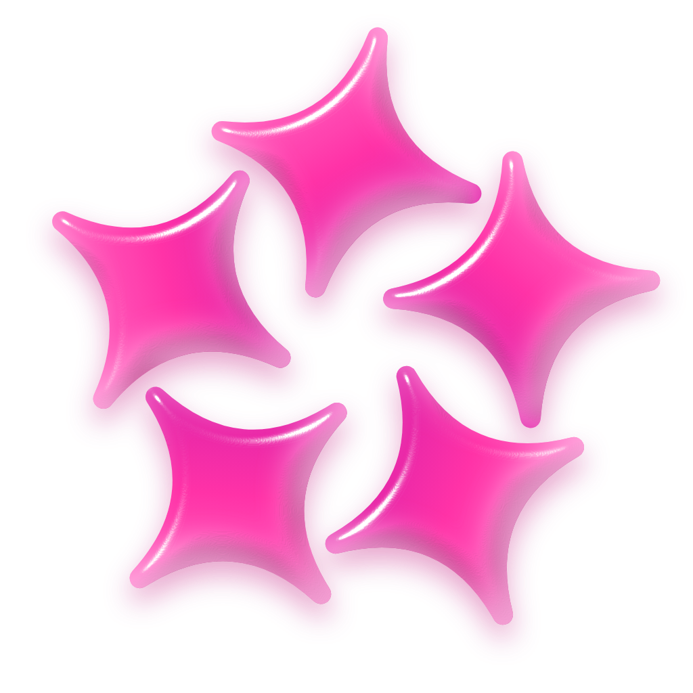

Logiciel
Téléchargement0 %
Logiciel
Vérifie ta connexion internet, puis réessaie.
Le launcher de Locks. Il installe, met à jour et lance ses logiciels, sur Windows, Mac et Linux.

Connecte ton compte Discord pour installer Hush. Tu n'auras pas à le refaire dans le logiciel.
Hush voit seulement ton pseudo et ta photo de profil, jamais ton mot de passe.
Verre en direct : le launcher montre ce qu'il y a juste derrière lui (fenêtres, vidéos, bureau), courbé et irisé sur les bords comme sur iPhone. Il n'apparaît plus sur tes captures d'écran ni dans OBS. Flou Windows : le flou du menu Démarrer. Sur mon fond d'écran : seulement le fond d'écran, pour les PC modestes.
Entrée : lancer ou installer le logiciel affiché · Échap : fermer cette fenêtre